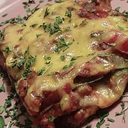

Lasagne

Recipe for Vegetarian Lasagne
Note: results may vary from images shown
Ingredients
- Lasagne Sheets
- Tomato Ketchup
- Cheese
Steps
- Boil the lasagne sheets for about 10 minutes
- Remove the lasagne sheets from the water and drain
- Place a lasagne sheet onto a plate
- Add Ketchup
- Add cheese
- Add another lasagne sheet
- repeat this process until your last sheet
- On top of the last sheet, add the remaining cheese
- Microwave for 30 seconds to melt the cheese
- Season to taste and Serve